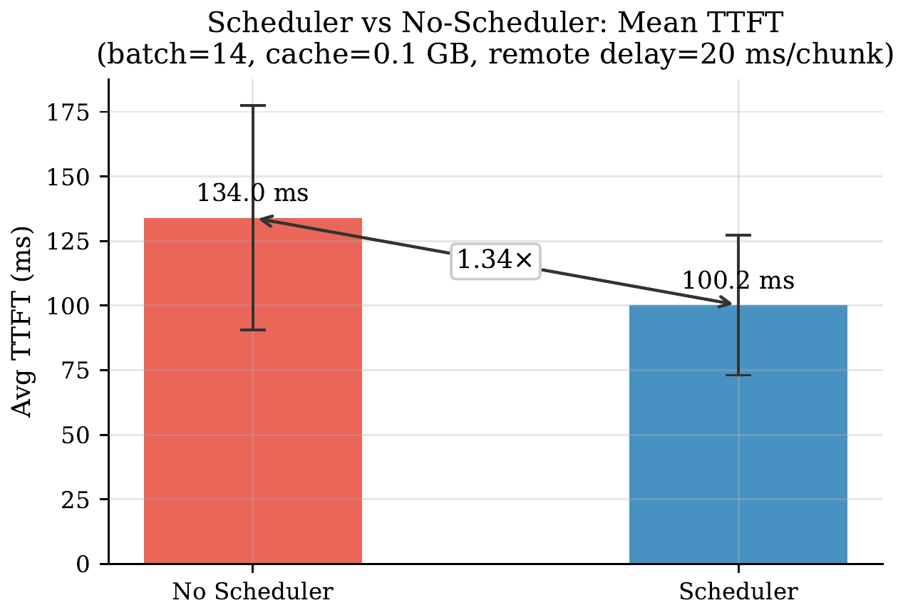
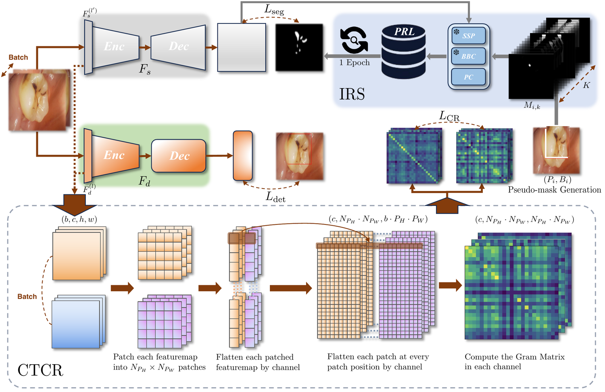

Changhe You
about
Hi, I'm Changhe — a Master's student in Software Engineering of Distributed Systems at KTH in Stockholm. Most of what I think about these days sits at the intersection of distributed systems and AI infrastructure: KV-cache scheduling, LLM inference, consensus protocols, and the plumbing that has to hold up underneath all of it.
Before KTH I did my undergrad in Software Engineering at Zhejiang University of Technology, and spent a stretch doing research on computer vision along the way.
Outside of systems, I'm usually at the gym, on a bike, on a bouldering wall trying not to fall off a V-something I had no business getting on, or on a basketball court losing badly. I also cook more than is strictly necessary.
projects
Course projects and research. Open a poster for the full write-up.

Battle-Testing OmniPaxos-KV
Black-box testing of a Paxos-based key-value store, plus the recovery and exactly-once fixes it needed. Linearizability held across 5 partition topologies and 3 crash regimes.

Hierarchical KV-Cache Scheduling for LLM Inference
Two-tier KV cache on vLLM and LMCache, with a document-aware scheduler that cuts mean TTFT by 25.2% over FIFO.

Bias or Incapacity? Why LLM Judges Accept Wrong Answers
A causal test of why LLM judges accept wrong answers. Across 703 real false positives, presentation alone explains an 11.2-point net reversal.

STRATA: Two Levels of Triage for Coding-Agent Fleets
Decides which issues a coding agent should attempt before any agent runs. On 22,625 real tasks it completes 82% more than a random order at 5% of the budget, and saves 32–45% of agent budget.

Consistency-Guided Joint Training for Weakly Supervised Segmentation
Changhe You, Nan Gao, et al.
Joint detection and segmentation training for noisy box labels: +29.6 mIoU over the best box-supervised baseline on caries images, competitive on ISIC2017.
writing
> nothing published yet — still deciding what's worth writing down. Check back later.